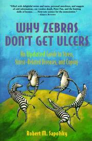

《斑马为什么不得胃溃疡》
书·Robert Sapolsky, 1994·Why Zebras Don't Get Ulcers: The Acclaimed Guide to Stress, Stress-Related Diseases, and Coping

用幽默的笔调解释慢性压力如何伤害身体。
- 作者
- Robert Sapolsky
- 年份
- 1994
- 难度
- 入门
- 类型
- 概览
- 所属学派
- 压力生理
- 核心理论
- 稳态应变负荷、一般适应综合征、战或逃反应、糖皮质激素级联假说
版本
- 中文版 《斑马为什么不得胃溃疡》 萨波斯 / 罗伯特·萨波尔斯基 · 中国社会科学出版社 · 2004 豆瓣 8.2 分（227 人评价） 豆瓣页面 ↗
- 英文版 Why Zebras Don't Get Ulcers: The Acclaimed Guide to Stress, Stress-Related Diseases, and Coping Robert M. Sapolsky · Third edition, Holt Paperbacks · 2004 Open Library ↗